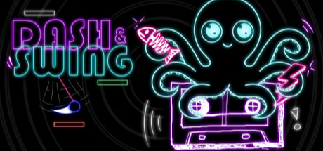
PLATAFORMER // AÇÃO
Plataformer de ação
Dash & Swing
Balance no gancho, atravesse mais de 80 fases e corra contra seu melhor tempo em desafios cheios de obstáculos.
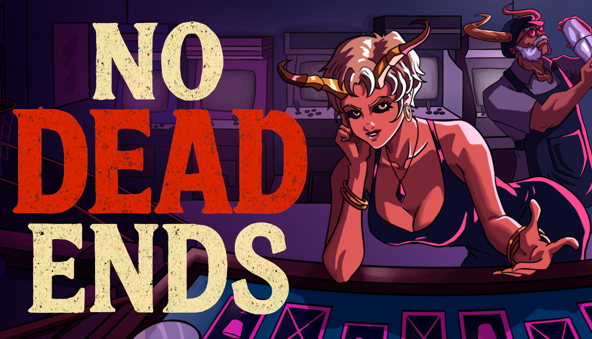
Próximo lançamento // Terror psicológico
Você morreu. Agora, sua alma pertence ao Barman. Desafie os fantasmas do Bar dos Condenados, vença seus jogos e conquiste sua liberdade.
Dois mundos já estão prontos para jogar. Escolha sua próxima aventura.

PLATAFORMER // AÇÃOBalance no gancho, atravesse mais de 80 fases e corra contra seu melhor tempo em desafios cheios de obstáculos.
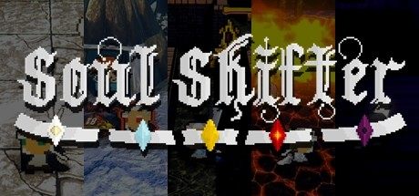
FANTASIA // ROGUELIKEExplore as ruínas de um antigo castelo, atravesse portais elementais e combine poderes para sobreviver às masmorras interdimensionais — solo ou em dupla.
Ideias compactas, desafios criativos e mundos construídos em game jams. Abra cada projeto para saber mais e jogar.
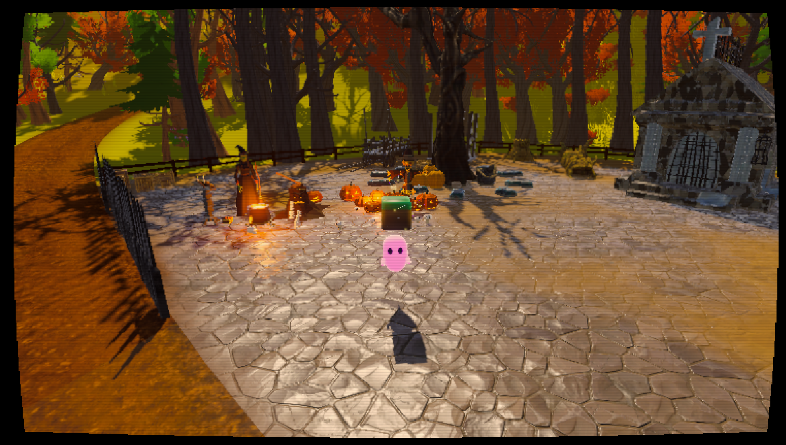
GAME JAMAjude Boowie, um fantasma entregador, a encontrar os objetos perdidos pelos moradores depois das festas de Halloween.
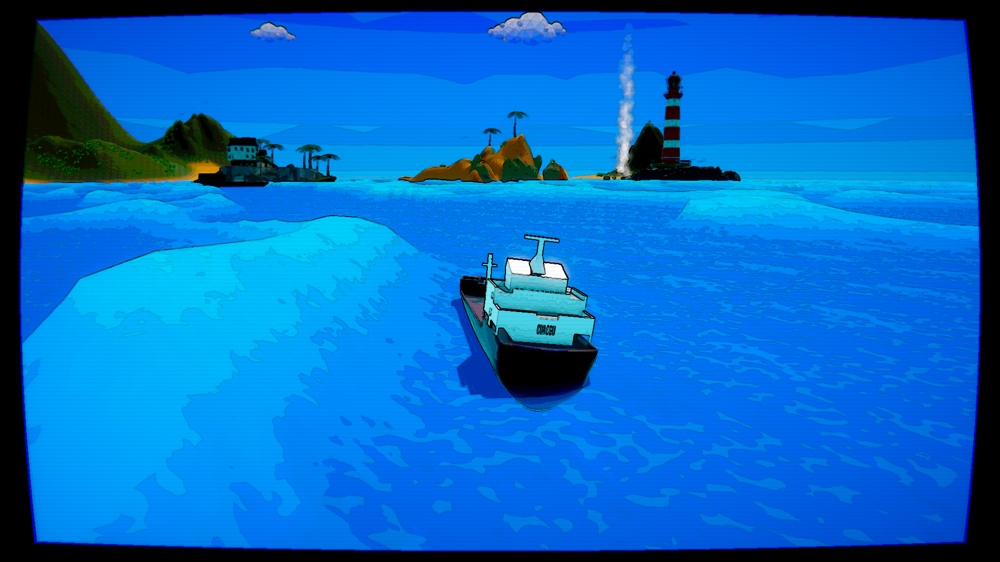
GAME JAMAssuma o leme com Rubby, capitão de cargueiro, e entregue mercadorias a comunidades em ilhas remotas.
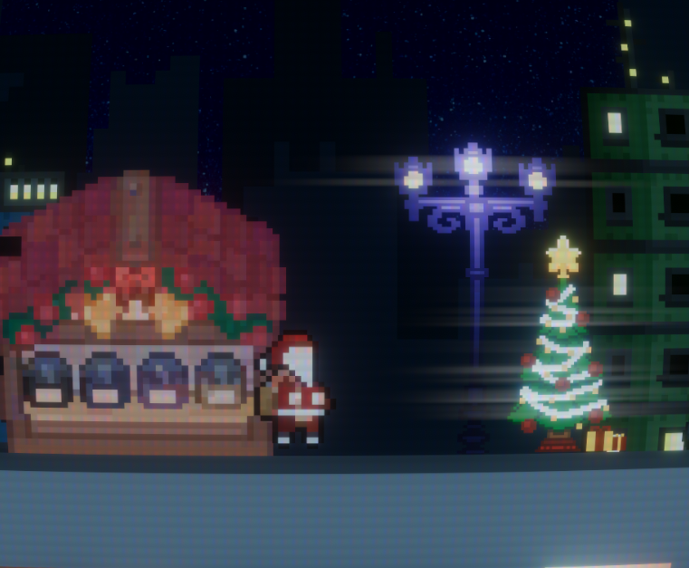
GAME JAMAjude o Papai Noel a entregar presentes nas grandes cidades, usando saltos, dash e um gancho.
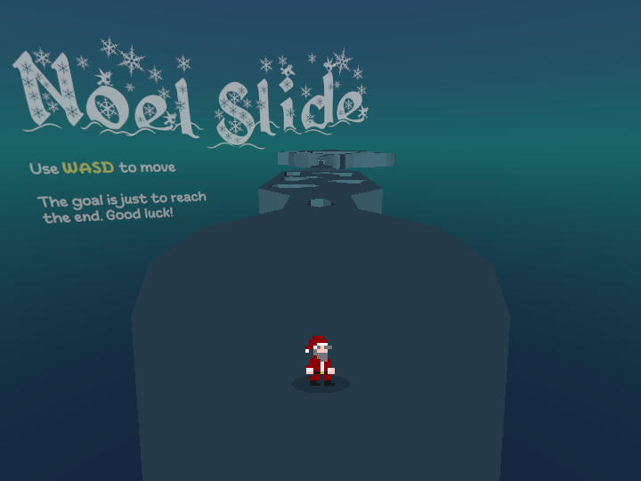
PROJETOUm jogo diferente de Santa Swing: guie Noel pela pista e encontre o caminho até o final.
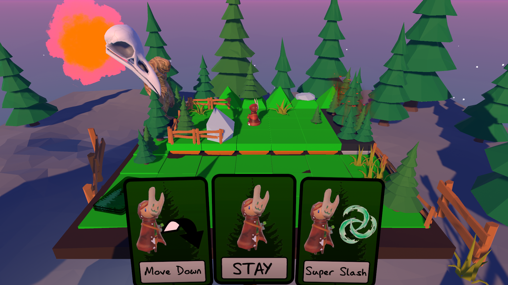
GAME JAMComo uma divindade, organize as cartas — as decisões de seus campeões — para ajudá-los a vencer três desafios.
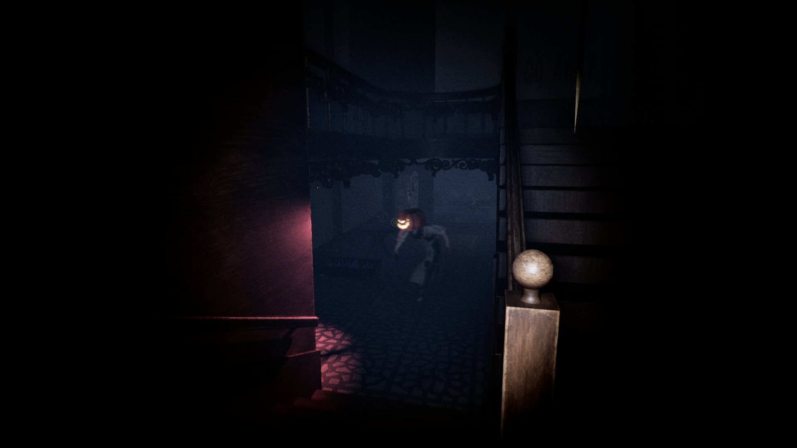
PROTÓTIPOAo voltar à casa de infância após a morte dos pais, Peter encontra uma presença que guarda segredos do passado.
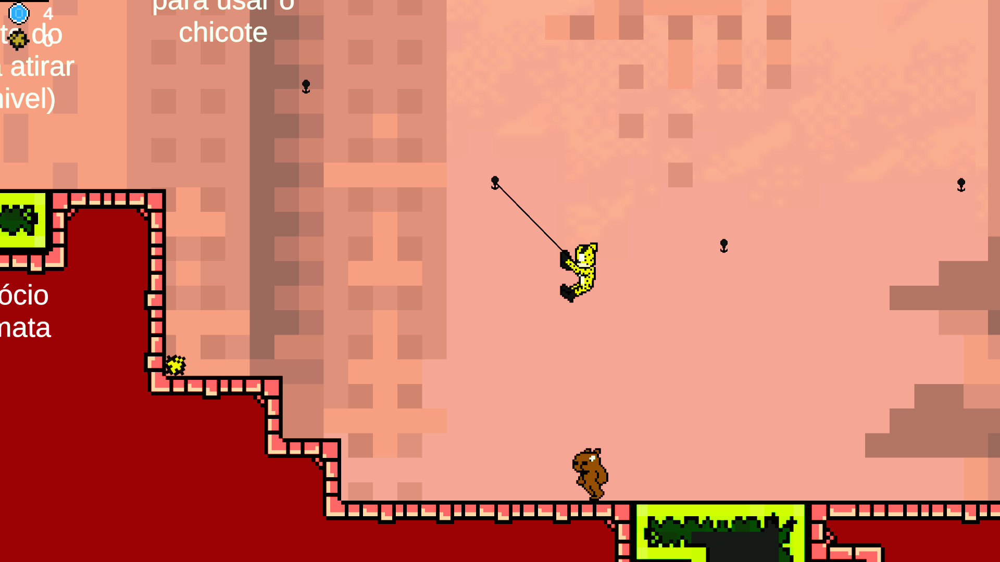
GAME JAMUm jogo de plataforma com tema de super-heróis, criado para a Game Jaaj 7: enfrente seu arqui-inimigo.
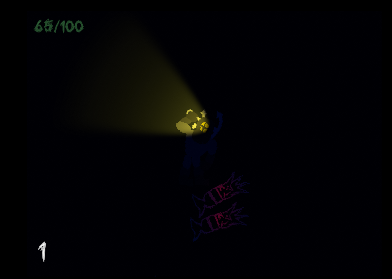
GAME JAMEnfrente ondas de peixes e sobreviva o máximo possível neste desafio de ação.
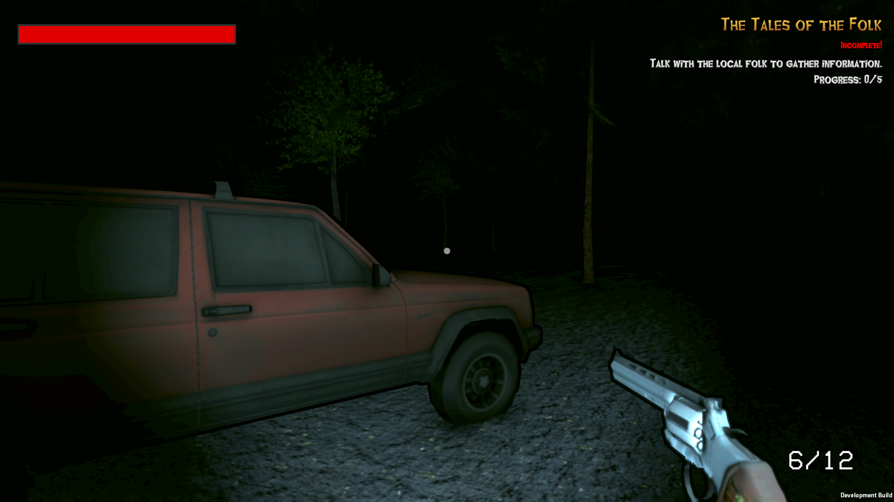
GAME JAMInvestigue o desaparecimento de moradores em uma pequena vila e encare horrores que desafiam a razão.
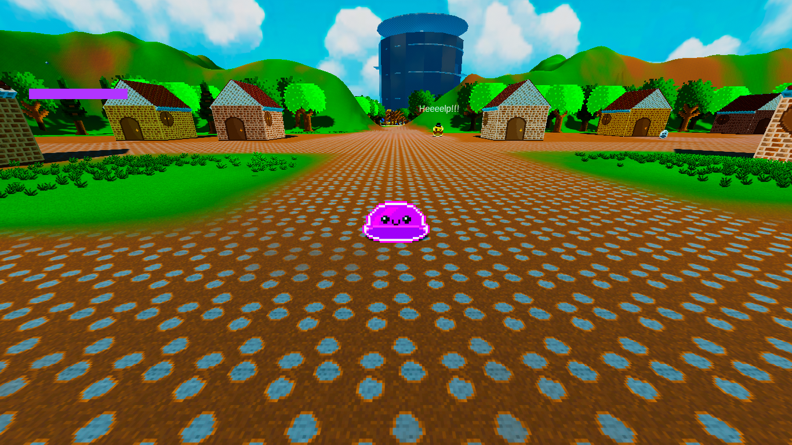
GAME JAMControle um slime, liberte seus amigos e enfrente a empresa que explora a essência vital do planeta.
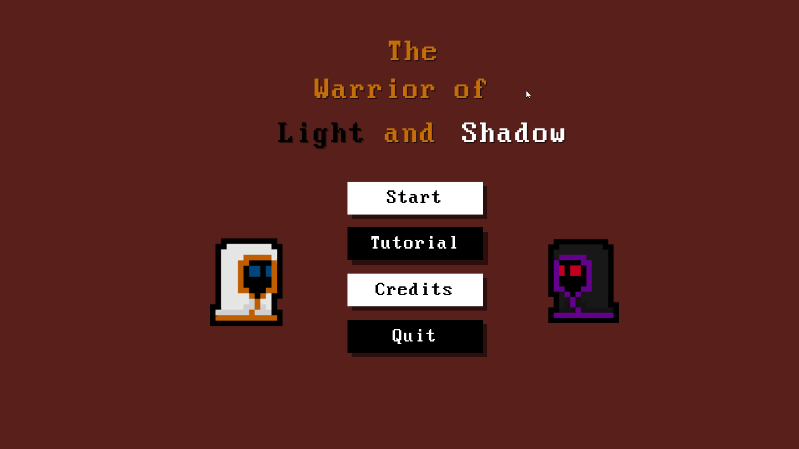
GAME JAMAlterne entre as almas da Luz e da Sombra para derrotar os inimigos de uma masmorra.
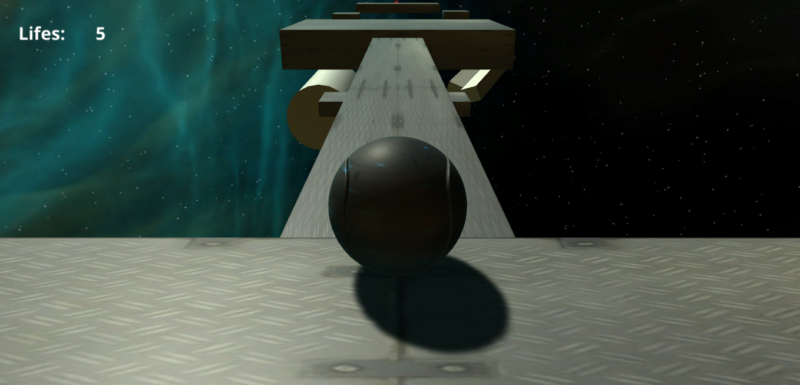
PROTÓTIPOUm antigo e desafiador projeto de plataforma: domine o impulso da bola e tente chegar ao fim.